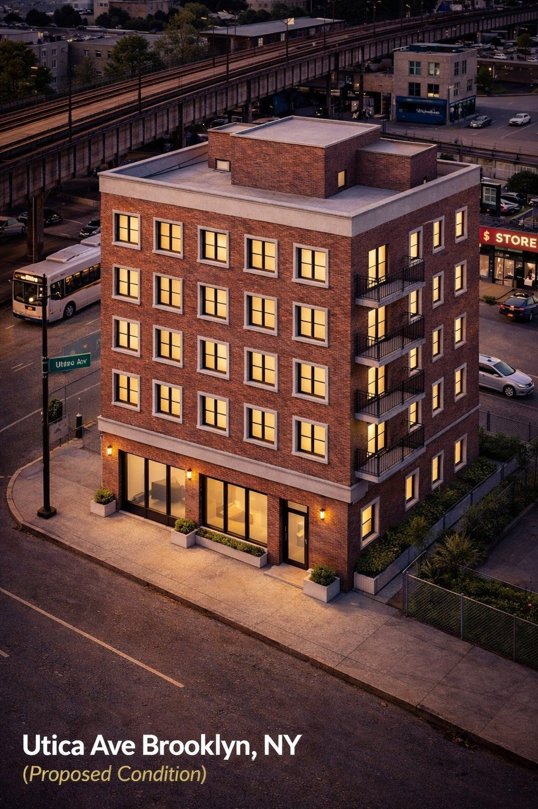
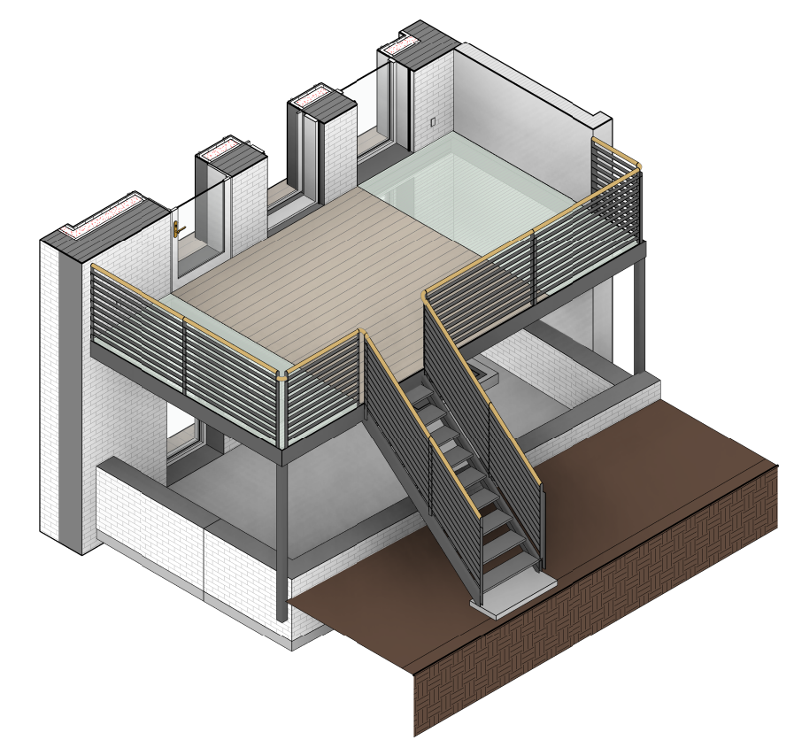
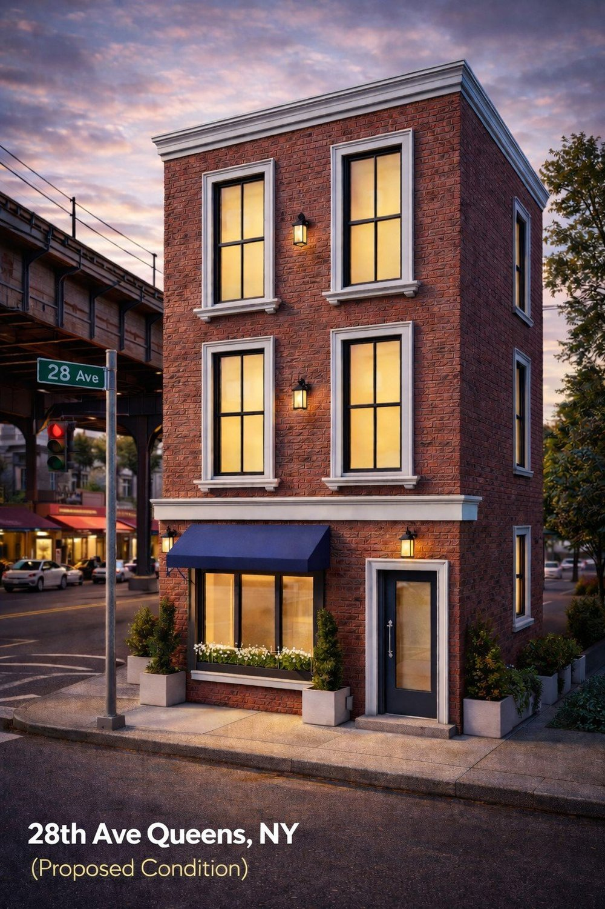
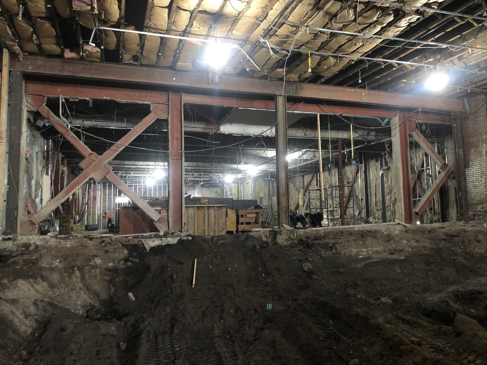
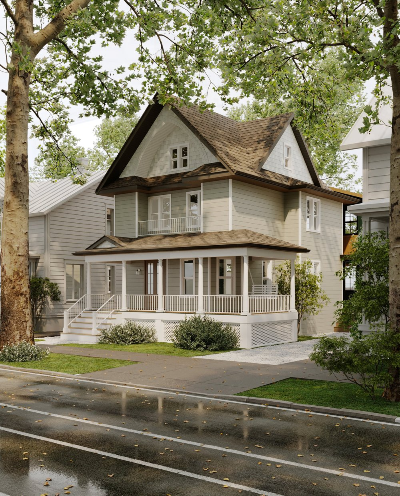
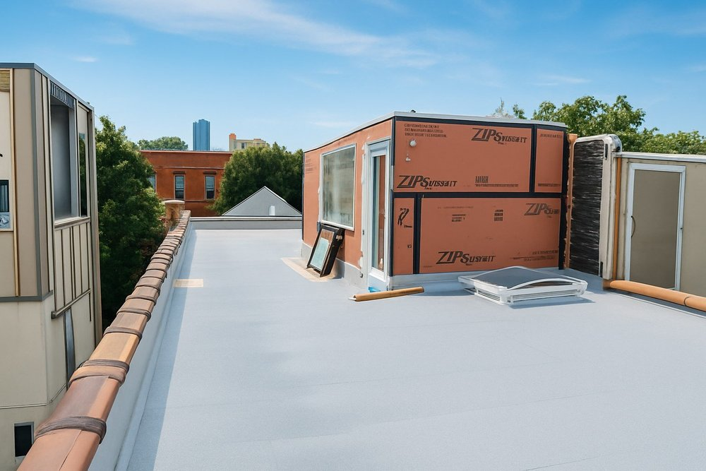
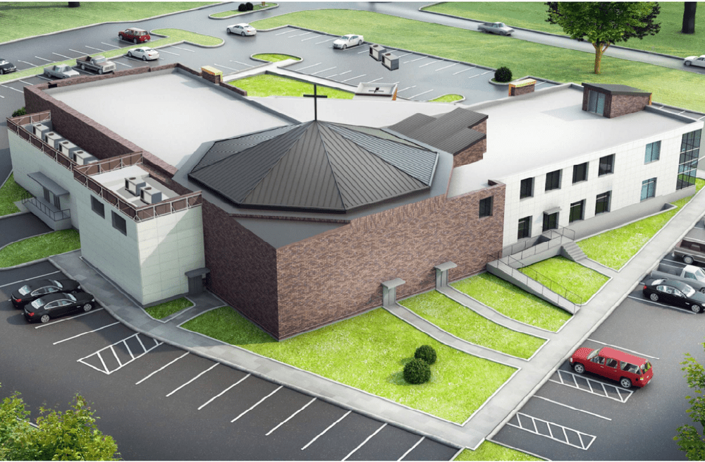

Utica Avenue Five-Story Development
Comprehensive structural design for steel framing, composite deck floors, eccentric footings, grade beams and elevator-core mat foundation.
Recent work
Every project tells a story of collaboration, problem-solving and structural expertise.

Comprehensive structural design for steel framing, composite deck floors, eccentric footings, grade beams and elevator-core mat foundation.

Detailed structural steel shop drawings for a rear yard metal deck using HSS steel posts, tubes and grating.

Structural design for a lightweight cold-formed steel level, joist reinforcement, stair openings and lateral upgrades.

Structural analysis and design for the unification of two adjacent buildings, including revised load paths, new steel beams and corner columns.

Full structural engineering for reframing, rear horizontal addition, reinforced concrete foundation work, underpinning and SOE.

Structural support and coordination for rooftop construction conditions and field implementation.

Independent structural peer review using finite element modeling to verify member performance, load distribution and global behavior.
H&Z supports homeowners, architects, contractors and developers from concept through construction.